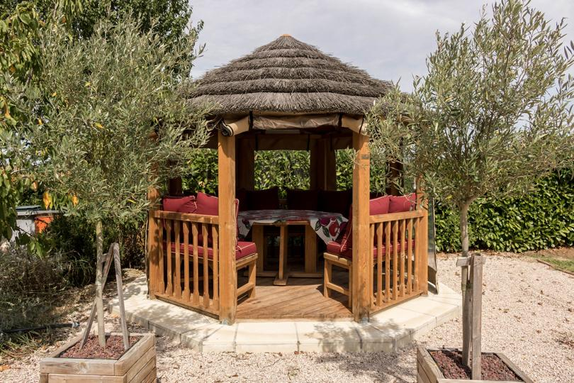

Vous êtes professeur de yoga, coach ou responsable RH et vous cherchez un lieu calme, à moins d'une demi-heure de Toulouse, pour une journée ou un week-end bien-être avec un groupe ? Le Domaine des Six, à Lherm, se privatise pour votre équipe ou vos élèves : un parc clos de 4 600 m², des espaces de pratique en plein air, cinq logements pour dormir sur place et des hôtes présents pour que tout se passe bien.
Un lieu de pratique en plein air, à 20 minutes de Toulouse
La tente permanente du parc accueille jusqu'à 40 tapis, à l'abri du soleil et de la pluie. La paillote et le pool house servent aux temps de parole, aux repas et aux pauses. Le parc, planté d'oliviers, de cyprès et de bananiers, reste en accès libre pour les séances au sol. La piscine chauffée, plein sud, est disponible en option de mai à septembre. Vidéoprojecteur, écran de projection et enceinte sont fournis pour les ateliers.
Trois formats, du matin au week-end
- La demi-journée (250 €) : deux séances de pratique et un temps d'échange, idéal pour un cours collectif délocalisé ou un atelier d'équipe.
- La journée (450 €) : pratique le matin, déjeuner livré par un traiteur dans le parc, atelier ou méditation l'après-midi, baignade en option.
- Le week-end résidentiel (1 290 € les espaces + hébergement) : deux jours de pratique, nuits sur place dans les cinq logements, dîners entre participants. Pour une retraite complète, voir le forfait retraite spirituelle, domaine privatisé à partir de 2 290 €.
Depuis Blagnac, Colomiers ou Toulouse centre
Le domaine se trouve à Lherm, au sud-ouest de Toulouse : 20 minutes du centre par l'A64, environ 30 minutes de Blagnac et de l'aéroport, 25 minutes de Colomiers, 11 km de Muret. Parking privé dans le domaine. Pour les groupes qui arrivent en train, la gare de Muret est à 15 minutes en voiture.
Ce que le domaine fournit, et ce qu'il ne fournit pas
Fourni : les espaces (tente, paillote, parc), le matériel de projection et de sonorisation, les logements avec linge et ménage pour les formats résidentiels, le parking, la présence de vos hôtes sur place (accueil à l'arrivée ou boîte à clés). Non fourni : les repas, préparés par les prestataires extérieurs de votre choix (traiteur, livraison, cuisines des logements à disposition), les tapis et le matériel de pratique, l'intervenant.
Pour quels groupes ?
Équipes de 8 à 15 personnes pour une journée bien-être d'entreprise, élèves d'un studio de yoga toulousain pour un stage délocalisé, groupes d'amis pour un week-end détox, associations pour une journée de cohésion. Au-delà de 15 personnes, la journée reste possible sans hébergement, jusqu'à 40 participants sous la tente.
Questions fréquentes
Combien de personnes peuvent pratiquer en même temps ?
Peut-on venir pour une seule journée, sans dormir sur place ?
La piscine est-elle comprise ?
À lire aussi
Ouverture mi-janvier 2027
Votre projet au domaine
Dites-nous votre date, le nombre de personnes et votre format : nous construisons la journée avec vous, sur devis.
Demander un devisTéléphone 06 98 20 02 08 · francois.leterrier.cmw@gmail.com